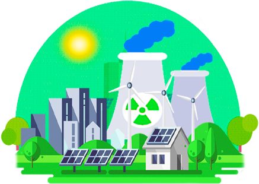
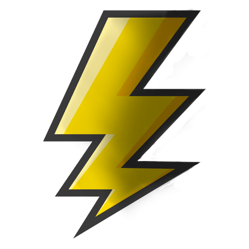
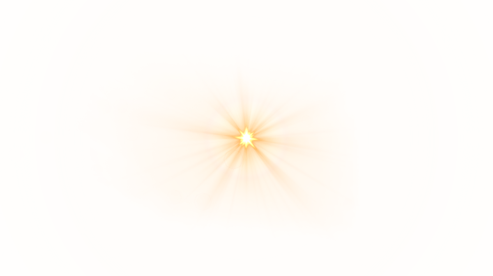
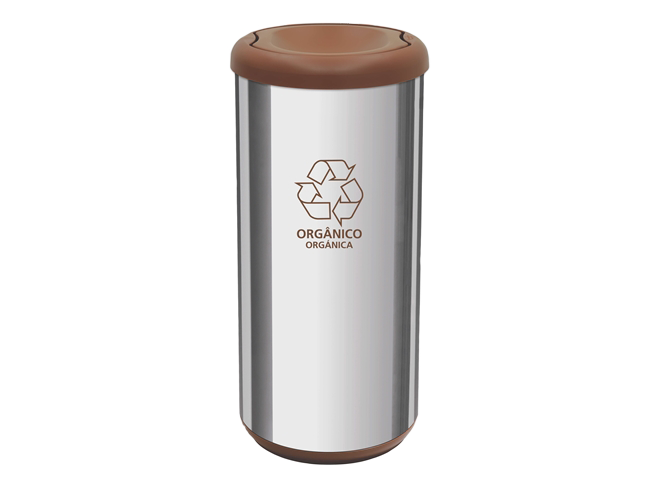
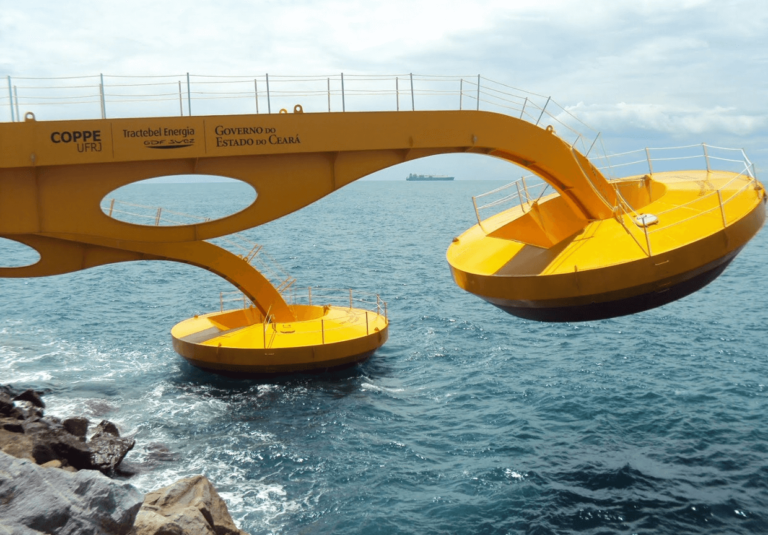

ENERGIAS


Bem-vindo(a) à aba de Energias. Nesta sessão você irá entender e saber de todos os detalhes de como as energias são produzidas para as casas. Além de saber a importância da utilização de fontes que não agridem o meio ambiente.
ENERGIA SOLAR


Energia solar, como o próprio nome já diz, é a energia proveniente do sol. Ela é captada por painéis solares, como esse ao lado por exemplo, e é convertida em energia para a residência. Nosso condomínio conta com um painel retrátil e 100% controlado pelo proprietário ou proprietária. A energia solar é a principal fonte de energia utilizada no projeto, visto que a localização do condomínio proporciona uma boa dispersão para a luz do sol. Além dos painéis nos topos das casas, em certas partes do conjunto também possuem.
BIOMASSA
Na conceção da geração de energia, o termo biomassa aglomera todos os derivados recentes de organismos vivos que são utilizados como combustíveis ou para a sua produção desses mesmos combustíveis. Portanto, ao redor de todo o condomínio possui (além das outras convencionais) lixeiras de material orgânico, onde o devido organismo será descartado. Após um período de tempo, os funcionários recolherão as devidas lixeiras e levarão os resíduos para a estação de tratamento e conversão de energia. O lixo doméstico também é recolhido e conta como biomassa, melhorando ainda mais o desempenho da energia.

A energia maremotriz, ou energia das marés, é aquela que é obtida por meio da força das ondas do mar (Sim! É possível!). O condomínio é localizado ao lado do mar, logo não utilizá-lo à favor dos moradores seria um desperdício. Visto isso, em um ponto estratégico, longe dos banhistas, possui uma barragem onde todo o sistema funciona, da captação das ondas até a devida conversão. São utilizadas máquinas especializadas e de alta tecnologia, e o melhor, que não agridem o meio ambiente.

Gostou das energias?
Agende sua visita, e conheça mais detalhes!
Voltar ao topo
Todos os direitos reservados © 2020 - Condomíno Sustentável - Grupo Energia